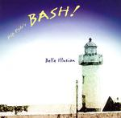

| Artist: | Pip Pyles Bash |
| Title: | Belle Illusion |
| Label: | Cuneiform Rune 193 |
| Length(s): | 67 minutes |
| Year(s) of release: | 2004 |
| Month of review: | [01/2005] |
| 1) | For Adiba | 7.54 |
| 2) | Vas Y Dotty | 5.02 |
| 3) | Sparky | 7.17 |
| 4) | Beautiful Baguette | 7.46 |
| 5) | Biffo's Belle Illusion | 7.44 |
| 6) | Spoutnik | 8.26 |
| 7) | Cauliflower Ears | 9.21 |
| 8) | Carousel | 7.04 |
| 9) | John's Fragment | 6.35 |
All sound samples from Belle Illusion appear here by permission of Cuneiform Records.
Vas Y Dotty is more in the vein of the Tone Center jazzrock releases and can not really appeal to me. Later on the hecticness of the track makes good somewhat. Sparky on the other hand, starts off with rather complex fingerwork on the guitar, with melodic lines intertwining. The mood is now laid back again with the typical Fender Rhodes dominating the stage.
Beautiful Baguette is a romantic piece and a bit boring in my book. Biffo's Belle Illusion is the first tune where the drums really come a bit to the fore. However, Pyle keeps strong reign on his drumming, with plenty of toms, but always restrained. Spoutnik has some nice melodic material played by the keyboards and punctuated by the bass player. Very sensitive, somewhat in the vein of the work of Patrick O'Hearn. The guitarist tends to take over somewhat, meandering over the keyboards as if they do not happen to being playing. The keyboard player continues undisturbed.
On Cauliflower Ears, Elton Dean is present to add a few of his notes. Also, the guitarist takes a more noisy approach here, which can liven things up a bit. But it is the sax that takes the fore here. Carousel is introduced by the piano and is in fact a rather hectic jazz tune, while Dean adds his dose of manicness to what would already be on the chaotic side. The build-up halfway has echoes of Van Der Graaf Generator, but it does not lead to the explosion I would have liked to hear. Still, it does have more urgency than most.
The groove returns on the closer John's Fragment, which has plenty of repetitiveness, but also some distinctive themes and a sense of mystery, mainly by virtue of the bass player. Certainly one of the most likable tracks.